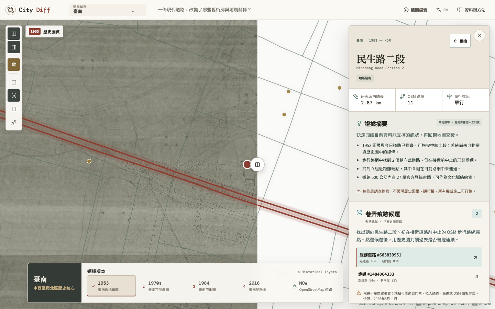
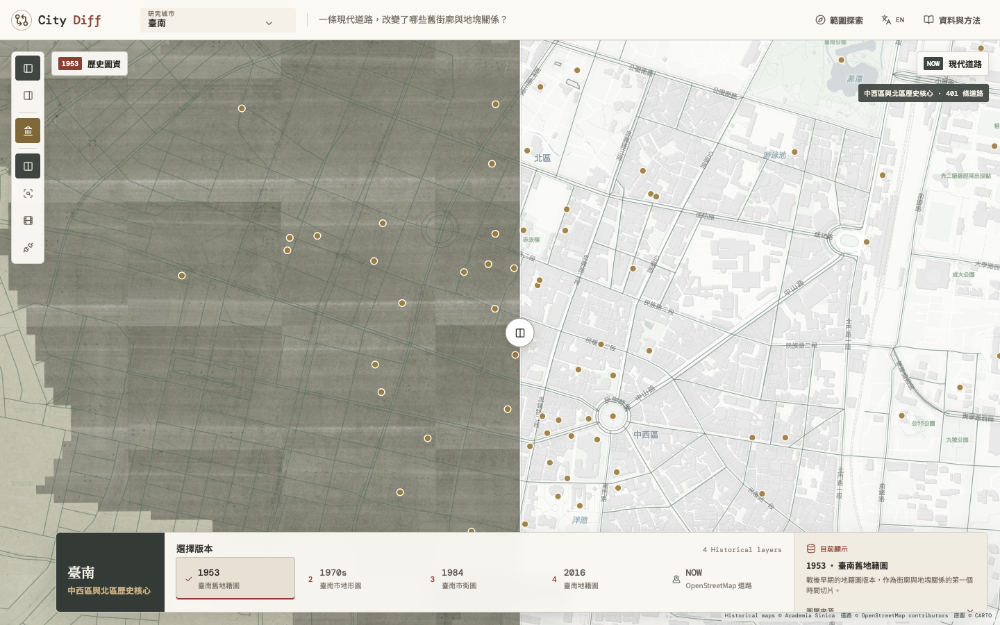
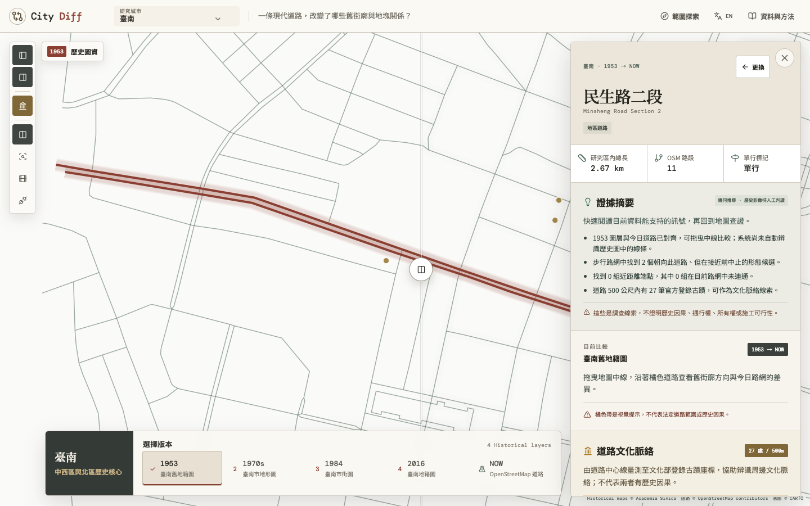
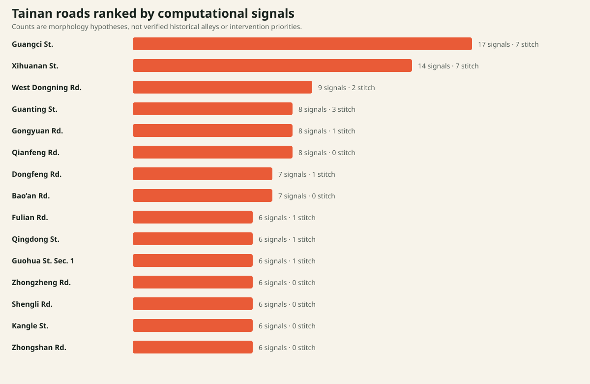
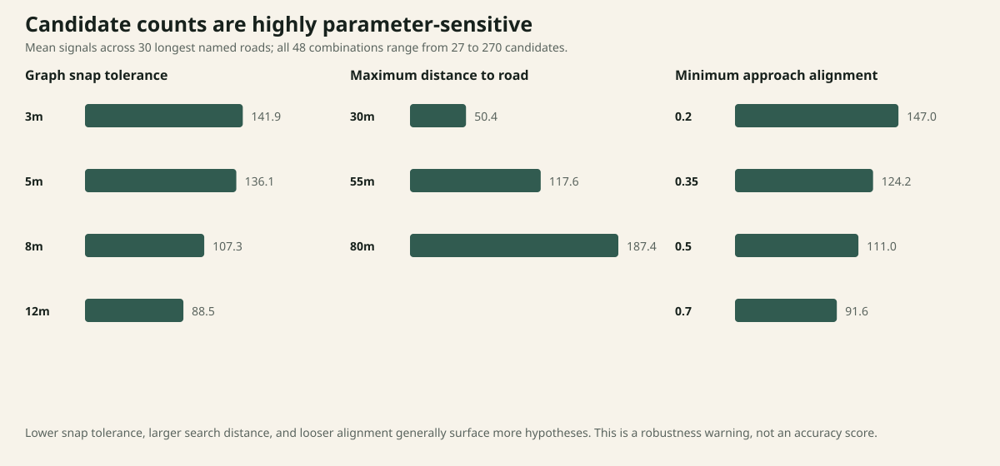
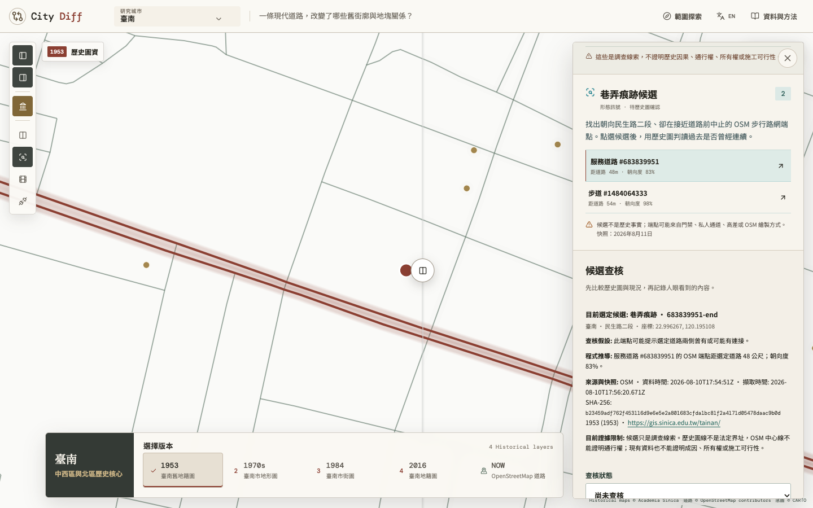
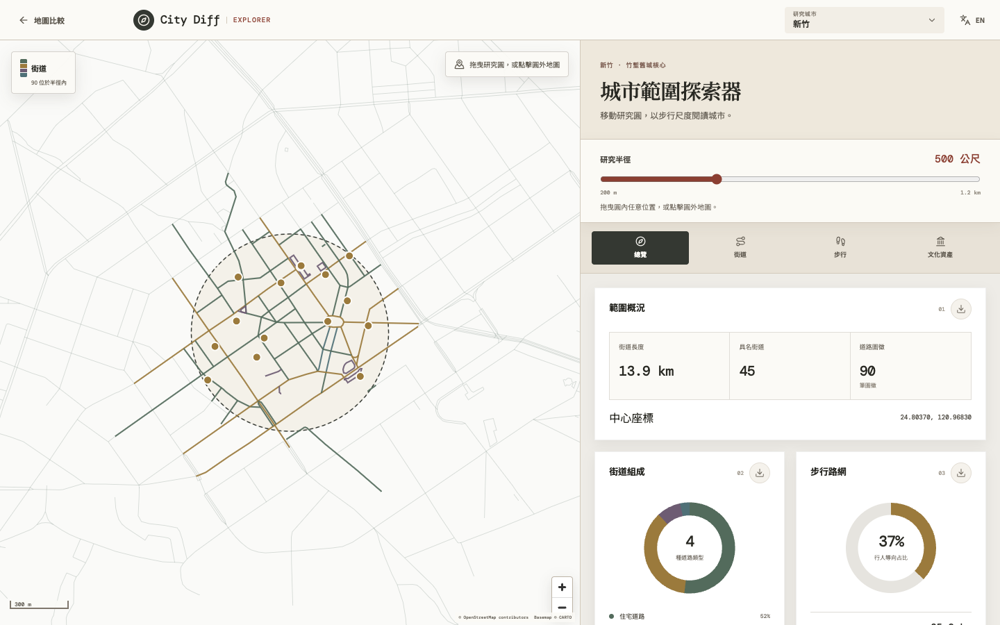
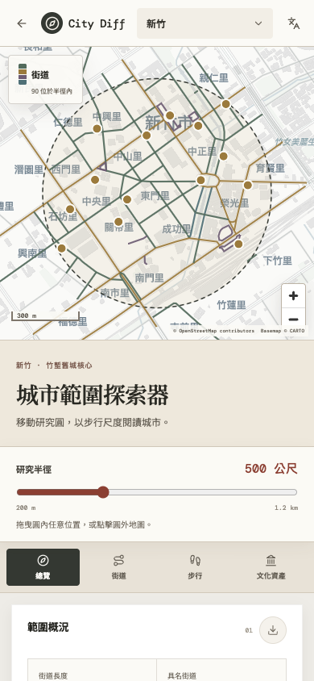

2021
先提出修補方案
《不完美的城市》將畸零地與殘餘空間理解為不同城市系統重疊的結果，並提出分散式微型介入。
Architecture thesisSpatial intervention

一套比較歷史圖資、現代路網與都市形態的研究工具。它用演算法提出值得檢查的問題，也清楚標示資料還不能證明的事情。
City Diff 延續 2021 年建築論文對臺南殘餘空間的關注，但把設計問題重新寫成可測試、可反駁的研究問題。
《不完美的城市》將畸零地與殘餘空間理解為不同城市系統重疊的結果，並提出分散式微型介入。
把形態直覺轉成演算法，再讓歷史圖、資料來源與人工判讀共同檢查每個候選位置。
這不是文案分類，而是整個產品的倫理框架：使用者必須能看見系統知道什麼、如何推得，以及仍缺少什麼。
來源直接提供、可追溯的紀錄。
可由固定輸入與參數重現的結果。
目前資料不能支持的主張。
滑動中線保留空間方向感；時間軸把每張圖的年代、圖種與來源放在同一個工作區。

作為戰後早期街廓與地塊關係的第一個時間切片。
觀察道路、街廓與建成紋理，不把它當作法定界址。
比較都市道路擴張後的街道結構。
提供較新的比較切片，但仍不是即時法律資料。
使用者選擇真實道路後，介面先提供幾何摘要，再把歷史影像、文化脈絡與候選位置放進同一個查核流程。

把可支持的訊號與不能推出的結論放在同一個視野。
橘色帶只提供視覺方向，不宣稱是道路邊界或歷史因果。
候選位置、資料快照、歷史圖層與觀察紀錄一起保存。
演算法不是替城市下判斷，而是把 4,800 段步行路網縮小成值得回到歷史圖檢查的位置。
輸出名稱刻意使用 morphology candidate，而不是「消失巷弄」；命名本身必須保留被反駁的空間。
以 8 公尺容差合併近接節點。
保留 degree = 1 且不在裁切邊界的節點。
端點距選定道路需為 3–55 公尺。
朝向道路的 cosine alignment ≥ 0.35。
12 公尺內只保留方向分數較高者。
回到歷史圖與現況記錄連接是否可見。
相同規則批次分析臺南研究框內全部 401 條具名道路，並保留零結果作為控制案例。

排名表示演算法對哪些道路提出較多問題，不代表公共價值、歷史重要性或投資優先序。
成功路在基準參數下沒有候選。這不表示沒有都市影響，只表示目前代理指標沒有發現指定形態。
48 組參數組合測試節點容差、搜尋距離與方向門檻；結果差距揭露模型的不穩定性。

搜尋距離的影響最大。55 公尺不是客觀真理，而是系統理解「與道路有關」的空間尺度。
這不是準確率測試。它檢查輸出對研究選擇有多敏感，並要求介面公開這些選擇。
每個候選保留資料快照、參數依據、歷史圖版本、人工觀察與仍待確認的具體問題。

記錄端點座標、距離與方向分數。
在相同座標檢查歷史圖與現代路網。
分開寫下看見的內容、引用來源與未解問題。
用時間與 SHA-256 辨識資料是否已更新。
匯出 JSON 或 Markdown，讓推論可以被他人檢查。
移動研究圓即可重新計算街道層級、步行路網、鋪面標記與文化資產，不需要預先挑選道路。

行動版維持可拖曳研究圓、清楚的範圍控制與單欄卡片；桌面版則保留地圖與分析並讀。

研究範圍、資料視角與關鍵數值維持在第一屏附近；觸控目標放大，卡片改成單欄，地圖仍可直接拖曳研究圓。
道路選取後保留地圖視野，使用者可再向上展開。
範圍概況、街道組成、步行路網、層級、鋪面與文化資產。
城市、圓心與半徑改變時，所有指標同步更新。
整合歷史圖、現代路網、文化資產、候選演算法、人工查核與多城市 Explorer。
參數、資料缺口與零結果都必須被保留，否則漂亮的介面只會放大虛假的確定性。
下一階段需要加入向量地籍、現場觀察、地方知識、通行權與治理流程。